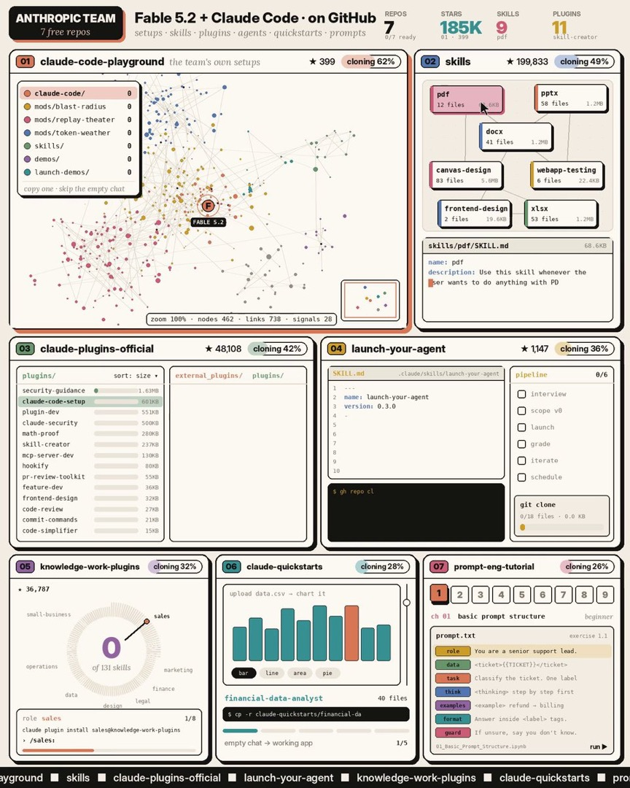
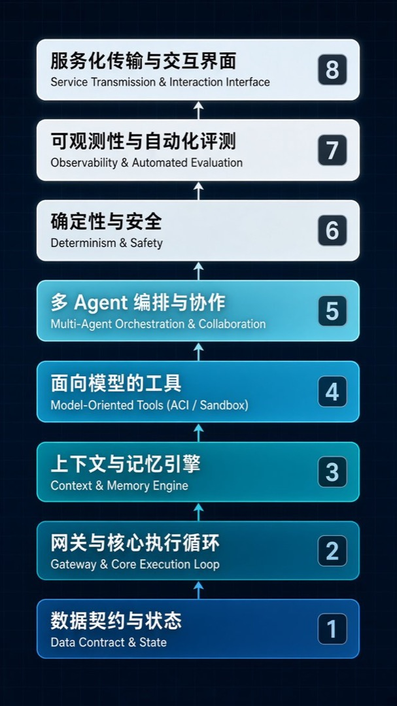
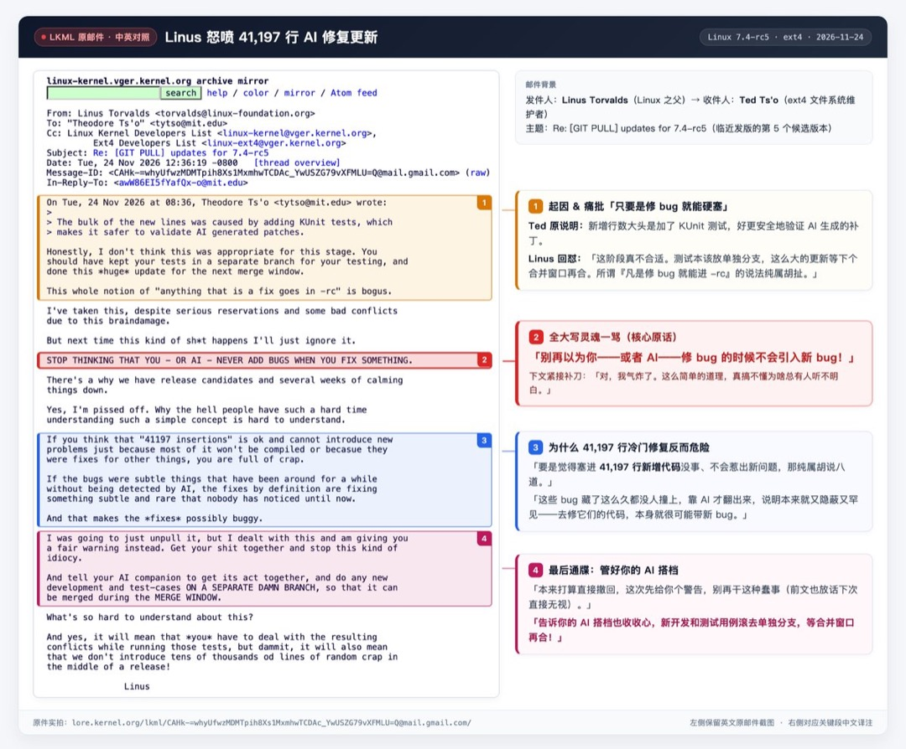
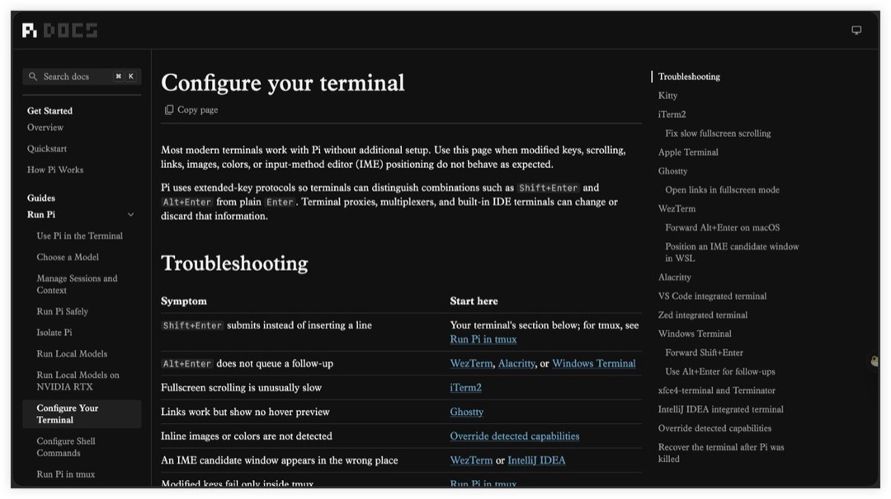
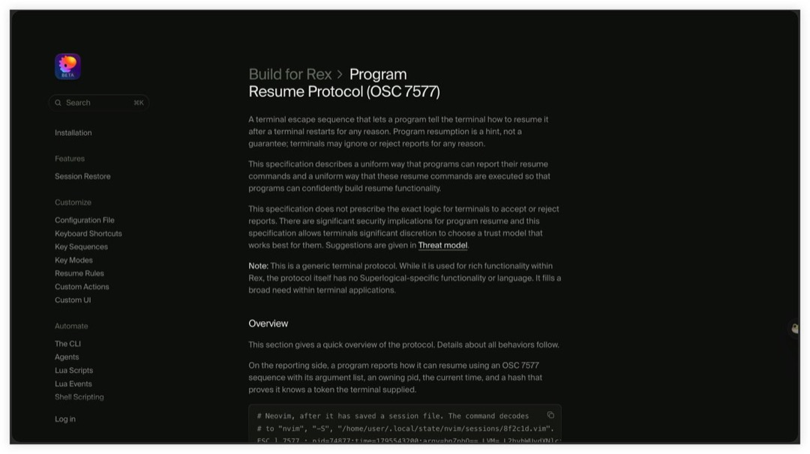
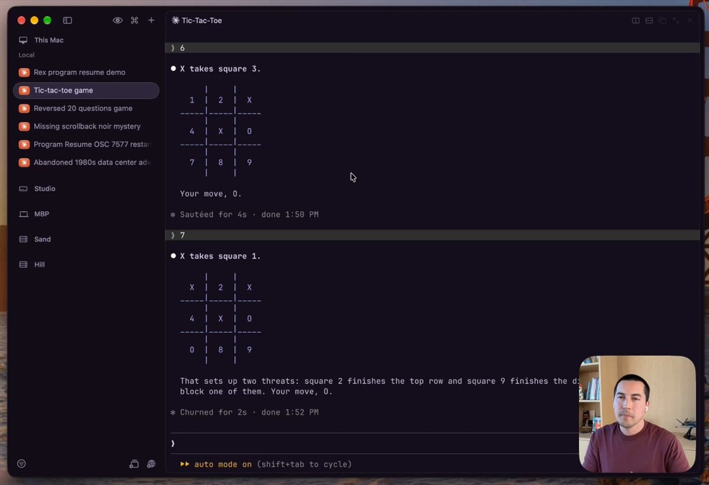

本期速览
02 Anthropic四层Agent记忆架构
07 多Agent系统近八成失败源于规格未对齐
09 Linus反对发版前合入4万行AI补丁
10 Pi接入OSC7577终端恢复协议
01｜MIT公理设计检查开源需求耦合
来源（X） · @goldengrape · 2026-11-26 09:02
只有下三角矩阵或者是对角阵才是解耦和的。严重耦合的项目就类似开炮必须全船转向的古老海盗船，炮塔都不能转的那种。
检查了t3 code，惨不忍睹。
02｜Anthropic四层Agent记忆架构
来源（X） · @MuRong97358 · 2026-11-26 12:36
核心看点：
1. 颠覆“全量塞入向量库”的传统范式：Anthropic 在《The components of agent memory》中指出，记忆系统的核心不是存得越多越好，而是全生命周期管理（让 Agent 知道什么值得记、何时回忆、何时遗忘）。
2. 四层记忆架构 + Dreaming（做梦）机制：将记忆拆解为原始记录、经验笔记、知识 Wiki 与主动加载四层，并引入后台异步整理机制（Dreaming），无需重新训练模型权重即可实现经验自我演进与纠错。
3. 实测数据验证“少即是多”：CL-Bench 数据库任务平均得分从 0.655 跃升至 0.838；宝可梦实验中仅保留约 10 个文件的 Fable 5 拿下 4 枚徽章（远超记了 413 个文件却只拿 1 枚徽章的 Sonnet 3.7）；4.2 亿 Token 企业知识库结合 Wiki 后准确率从 53% 提至 61%，单次提问立省约 2 万 Token。
一、 告别“聊天记录转 Embedding”：Anthropic 四层记忆架构深度拆解
当前市面上大量 Agent Memory 项目陷入了一个同质化误区：将历史聊天记录原封不动存入数据库，转成 Embedding 向量，需要时再用向量检索（RAG）捞出来。Anthropic 最新发布的《The components of agent memory》彻底打破了这一粗放模式，将 Agent Memory 精细化拆解为四个递进层级：
1. Transcripts（原始记录层）：充当 Agent 的底层事件日志（Event Log），完整保存历史对话、工具调用和任务执行过程。这一层不在写入时提前判断信息是否重要，核心使命是 100% 保留原始证据链，为后续的搜索、交叉验证和事实纠错提供锚点。
2. Memory Notes（经验记忆层）：Agent 在执行任务过程中，将高价值信息提炼为结构化笔记，涵盖踩过的坑、已验证的规则、用户偏好以及下次待继续执行的计划。这里的核心认知在于“记录事实不等于形成经验”——真正高质量的 Memory 必须同时包含“结论”以及“该结论为什么可信的验证依据”。
3. Memory Representations（知识组织层）：跳出单一的向量索引思维，让 Claude 在后台持续维护一套结构化 Wiki，将分散的笔记、事实和文档动态关联。系统会自动合并重复内容、补充缺失链接、修正过期信息，最终织成一张可自由导航的结构化知识网络。
4. Injected Context（主动加载层）：克制使用 Context Window（上下文窗口），拒绝将所有记忆一股脑塞入提示词。核心策略是“真正重要的高频核心信息提前主动加载，其余长尾细节按需检索”。例如 Claude Code 的 Auto Memory 机制，默认仅自动加载 MEMORY.md 的前 200 行或 25KB 内容，更深层的细节则通过索引按需查找，从而在保留长期记忆的同时避免上下文被历史包袱撑爆。
二、 核心技术壁垒：借鉴人类睡眠的 Dreaming（后台记忆整合）机制
整套架构最具技术含量的突破，是 Anthropic 提出的 Dreaming 机制（即工程层面的 Background Consolidation，后台记忆整合）。它直接借鉴了人类在睡眠期间整理、巩固日间记忆的脑科学原理，将“记忆维护”从紧迫的实时任务流中解耦出来，交由独立的后台进程利用空闲计算资源异步完成五件事：
1. 提炼复用规则：深度回顾历史任务轨迹，从散乱的操作中抽象出可跨任务复用的通用规则。
2. 事实溯源纠错：对照底层的 Transcripts（原始记录），主动修正此前记错或出现偏差的事实。
3. 构建结构化 Wiki：将零散的经验笔记（Memory Notes）进一步归并、升华为体系化的结构化 Wiki。
4. 记忆脱水与垃圾回收：主动清理重复、已失效或前后互相矛盾的脏记忆，实现精准“遗忘”。
5. 动态规划上下文注入：评估并决定哪些高优信息应该直接进入下一次会话的 Injected Context（主动加载层）。
通过这套机制，大模型本身完全不需要重新训练权重，就能依靠持续积累、交叉验证和动态修正经验，在后续任务中表现出越来越强的进化能力——这也是成熟 Agent 与普通聊天机器人真正拉开代差的核心分水岭。
三、 三大硬核实验数据复盘：为什么“不加筛选的记忆”反而是累赘？
Anthropic 在报告中披露了三组极具说服力的对比实验，直观验证了“精细化记忆治理”对任务效果与成本的颠覆性影响：
1. CL-Bench 数据库任务测试：在接入这套完整记忆架构后，Claude Opus 5.5 在 CL-Bench 数据库任务中的平均得分，从无记忆状态下的 0.655 大幅飙升至 0.838。
2. Claude 玩宝可梦（Pokémon）对比实验：让不同版本的模型挑战宝可梦游戏。结果极具反差感——Sonnet 3.7 在运行中疯狂记下了 413 个文件，最终却只拿到 1 枚徽章；而 Fable 5 全程克制，仅保留了约 10 个核心文件，最终却成功斩获 4 枚徽章。尽管这属于不同模型的单次运行表现（不能单一归因于记忆文件数量），但它极其尖锐地揭示了一个真相：Agent 往往不是缺记忆，而是太容易把毫无价值的噪音当成记忆存下来，进而干扰决策。
3. 35 万份文档的企业级知识库实验：Anthropic 使用约 35 万份文档（总计约 4.2 亿 Token）构建了超大规模企业知识体系。实测显示，单纯依赖搜索（Search）的答题得分为 53%；而采用“持续构建的 Wiki + 搜索”混合模式后，得分直接跃升至 61%，且平均每个问题还额外节省了约 2 万 Token 的开销。
四、 工程落地方案与避坑指南：下一代 Agent Memory 的黄金组合
1. 警惕知识 Wiki 的适用边界（并非银弹）：构建与维护知识网络存在明确的算力与工程成本。如果业务场景仅仅是“从单份独立文档中查找明确答案”，额外构建一套复杂的知识 Wiki 并不会带来明显收益，反而会推高系统的维护成本。
2. 决胜长周期运行（防错误累积）：对于需要长时间持续运行的 Coding Agent 或复杂多 Agent 协同系统，最致命的隐患是“错误复利”。如果记忆系统缺乏持续验证与纠错机制，系统运行时间越长，幻觉与错误记忆就会滚雪球般越积越多。因此，下一代 Agent Memory 的决胜点不再是单纯的 RAG 检索能力，而是 Memory Lifecycle Management（记忆全生命周期管理：何时写入、如何验证、怎样更新、如何遗忘、何时主动注入）。
3. 拿来即用的工程架构公式：从一线工程落地角度看，构建高成熟度 Agent 记忆系统的黄金组合应当是：Event Log（事件日志/原始记录） + Structured Memory（结构化经验笔记） + Knowledge Wiki（关联知识网络） + Retrieval（按需检索） + Background Consolidation（Dreaming 后台异步整合）。未来评估一个 Agent 是否真正成熟，不能只看它能调用多少外部工具，更要看它能否从过去的工作流中持续把经验沉淀下来
03｜招投标大师聚合20+招投标平台
来源（X） · @ilovek8s · 2026-11-26 09:11
聚合采集国内20+招投标信息平台【学习使用】，对于企业b2b或者自己有公司，或者想为其他人或者组织提供数据服务的朋友很友好！！这个玩法场景很多，看佬们的探索了！！
https://github.com/Lappercn/tender-master
04｜Anthropic开源Claude工作流
来源（X） · @angeldot_ · 2026-11-26 22:37
中文译文
这是一个金矿
Anthropic 已在 GitHub 上发布了其团队每天工作所使用的 Claude 配置
7 个免费仓库，你可以复制并在你的项目中使用：
1. claude-code-playground
团队自己的配置：hooks、CLAUDE.md 和工作流
复制一个，你就能省去空白聊天
https://github.com/anthropics/claude-code-playground
2. skills
Claude 用来创建 Word、PDF、演示文稿和 Excel 的确切 skills
https://github.com/anthropics/skills
3. claude-plugins-official
官方插件列表
包含一个用于从 Telegram 给 Claude 写消息的插件
https://github.com/anthropics/claude-plugins-official
4. launch-your-agent
它会就你的想法对你进行访谈，并启动你自己的 agent
之后它会按时间表让它自行运行
https://github.com/anthropics/launch-your-agent
5. knowledge-work-plugins
把 Claude 变成销售、营销、财务或法律方面的专家
https://github.com/anthropics/knowledge-work-plugins
6. claude-quickstarts
一个已经可用的支持机器人，以及一个分析财务数据的工具
复制一个并把它改编成适合你的东西
https://github.com/anthropics/claude-quickstarts
7. prompt-eng-interactive-tutorial
Anthropic 的课程，教你写出真正有效的 prompts
https://github.com/anthropics/prompt-eng-interactive-tutorial
更少的时间用于配置。更多的时间用于构建。
你用 Claude 的下一个项目永远不应该从空白聊天开始
保存这个，并复制最适合你的配置
而要更充分地利用 Claude，我在下面给你留了一份指南，包含几乎没人使用的所有功能👇
原文
ESTO ES UNA MINA DE ORO
Anthropic ha publicado en GitHub los setups de Claude con los que su equipo trabaja cada día
7 repos gratis que puedes copiar y usar en tus proyectos:
1. claude-code-playground
Los setups del propio equipo: hooks, CLAUDE.md y flujos de trabajo
Copias uno y te ahorras el chat vacío
https://github.com/anthropics/claude-code-playground
2. skills
Las skills exactas que usa Claude para crear Word, PDFs, presentaciones y Excel
https://github.com/anthropics/skills
3. claude-plugins-official
La lista oficial de plugins
Incluye uno para escribirle a Claude desde Telegram
https://github.com/anthropics/claude-plugins-official
4. launch-your-agent
Te entrevista sobre tu idea y lanza tu propio agente
Después lo deja funcionando solo con un horario
https://github.com/anthropics/launch-your-agent
5. knowledge-work-plugins
Convierte a Claude en un especialista en ventas, marketing, finanzas o legal
https://github.com/anthropics/knowledge-work-plugins
6. claude-quickstarts
Un bot de soporte que ya funciona y una herramienta que analiza datos financieros
Copias uno y lo adaptas a lo tuyo
https://github.com/anthropics/claude-quickstarts
7. prompt-eng-interactive-tutorial
El curso de Anthropic para escribir prompts que funcionan de verdad
https://github.com/anthropics/prompt-eng-interactive-tutorial
Menos tiempo configurando. Más tiempo construyendo.
Tu próximo proyecto con Claude no debería empezar nunca desde un chat vacío
Guarda esto y copia el setup que más te sirva
Y para sacarle más partido a Claude, te dejo abajo una guía con todas las funciones que casi nadie usa👇

引用内容
angel @angeldot_
中文译文
原文
05｜Xray REALITY伪装域名加固
来源（X） · @Ryusoohow · 2026-11-25 20:24
你是我的 VPS 运维助手。请排查并加固这台自建 VPS 上 Xray REALITY 的伪装域名（dest / serverNames）。只操作本机，不要改动无关配置。
【背景】
如果 SNI 是 cloudflare、apple、microsoft、google 等热门大站，而本机 IP 并不属于这些公司，就会出现“SNI 与 IP 归属不符”的特征，而且用的人多，容易被统计和主动探测识别。目标是让 SNI 对应的真实站点与本机 IP 在同一网段或同一地理位置。
【步骤】
1. 只读检查：找到 xray 配置（通常 /usr/local/etc/xray/config.json），读取 realitySettings 的 dest 和 serverNames。不要输出 privateKey、shortIds、UUID。
2. 判断：若域名属于 Cloudflare、Apple、Microsoft、Google、Amazon、Akamai 等大型 CDN 或热门站，或解析出的 IP 不在本机 ASN/地区，则标记“需更换”；否则报告“无需更换”并结束。
3. 获取本机公网 IP、ASN、所在城市。
4. 邻居扫描：只在本机所在 /24 内，对 443 端口做 TLS 握手探测（只握手，限速，并发不超过 20，不做端口扫描和漏洞探测）。可用 RealiTLScanner 或 openssl/curl。筛选条件：
- 支持 TLS 1.3 和 h2（ALPN）
- 证书有效，且不是 CDN 边缘节点（Cloudflare/Akamai/Fastly 等）
- 直连返回正常（200/301/302 均可），握手延迟低
- 证书域名能正常解析到该邻居 IP
5. 若 /24 内没有合适目标：选一所与 VPS 同地区（同国家、同州或邻近城市）的 .edu 站点，条件同上，并用 dig 加 IP 地理查询确认其服务器位置与 VPS 所在地匹配。
6. 修改：先备份（cp config.json config.json.bak.日期）；把 dest 改为“域名:443”，serverNames 改为对应域名；用 xray run -test -c config.json 校验通过后再 systemctl restart xray。
7. 验证：确认 xray 在监听、journalctl 无报错；用 openssl s_client -connect 本机IP:443 -servername 新域名 确认返回的是目标站证书。失败则自动回滚到备份。
8. 输出：旧 SNI → 新 SNI、选择理由，以及我需要在客户端同步修改的字段（serverName / sni）。
【约束】
- 只扫描本机所在 /24，必须限速，避免被机房判定为扫描滥用。
- 不要展示或上传任何私钥、UUID。
- 修改前先把计划发给我，我确认后再执行。
06｜Coding Agent需补轻量决策层
来源（X） · @realWeZZard · 2026-11-26 20:55
1. 之前觉得 "Bash is all you need"，其实是想窄了
一年前他自己也觉得，以后什么 MCP 和专用工具都不需要了，全走 CLI 就行，前端也只需要写 React，因为模型只擅长这一种套路。但他现在发现并非如此：模型只有在能力刚够用的时候，才会局限在单一格式里；等通用能力上来之后，它完全能顺着人原本的习惯干活：比如直接用 computer-use 打开 Figma 画界面。人不需要为了迁就模型去改自己的工作方式，未来也不会变成模型自己在那死循环、吐出一堆没人能维护的代码。
2. 通过保留手搓对抗纯靠 prompt 写代码的失控感
今年到处都在吹全自动量产的「软件工厂」，结果造出一大堆连作者自己都不用的 AI slop。Thariq 提到自己做游戏时很烦纯 vibe coding 的一点：你用几句话描述需求，模型会在背后自己脑补一堆默认逻辑，跑起来连你自己都搞不清角色为什么会这么动。
他的做法是：
1. 底层的重活（比如 WebAssembly 引擎）照样丢给模型写。
2. 但在项目里单独建一个 /human 目录，放一套专门给人读写的脚本，用 Linter 强制要求多写注释、禁用单字母变量、限制行宽。
这些文件看着像 spec，但本身就是直接运行的代码。把枯燥的底层实现交给 AI，把决定手感和玩法的部分留在自己手里随时改——在他看来，AI 不只是追求效率的「工业革命」，也应该让人腾出手来做打磨品质的「文艺复兴」。
3. 现在的 agent 框架普遍低估了 decision model
目前做 AI 应用往往走两个极端：要么全写死成传统代码逻辑，要么每一步都调大模型跑完整的推理和工具调用。Thariq 觉得中间其实缺了一层轻量的 decision model（类似快思考的 System 1 模型）。
从可解释性研究，还有 Karpathy 那个用经纬度测海陆分布的实验都能看出来，大模型在跑完一次前向传播（forward pass）之后，其实心里已经有数了。如果可选的动作范围本来就是明确的，真没必要再让它吐一堆 token 出来慢慢推理；直接用一次前向传播拿概率分布做判断就够了，真遇到信息不够或者复杂问题，再退回给大模型去调工具。
4. 写代码不再费劲之后，最难的是搞清楚自己到底想要什么
他说自己连 Claude 和 Codex 每月 200 刀的套餐都没用满过——现在卡住他的早就不在 token 数量上，甚至也不在模型智商上，而是怎么跟模型打交道，以及自己的野心够不够大。
很有意思的一个插曲是，他前阵子给自己写了个定制版 macOS Dock，结果没用几天就弃了。主持人问为什么，他说：「我甚至不知道自己到底想要什么。」现在搓一个原型的成本几乎为零，但很多东西只有真做出来用上几天，你才知道自己真正需要解决的是什么。哪怕再往后走到模型自我迭代（RSI）的阶段，他也不觉得完全脱手让模型自己瞎跑是最优解——算力预算终归是有限的，决定把算力投给哪个实验、做什么取舍，最后看的还是人的判断力。
https://www.youtube.com/watch?v=Qe9d9dWyED0
07｜多Agent系统近八成失败源于规格未对齐
来源（X） · @snwiki238337 · 2026-11-26 16:45
如果把一个完备的 Agent 系统在工程上来看得话，就会复杂很多，这也是很多 agent 的研究者 在看完 agent 后会有一种缥缈的断层的感觉的原因之一，这里因为我最近在开发多 agent 系统的项目，就简单梳理一下。
最底层的就是数据契约与状态，简单讲就是利用代码限制数据的格式，可以理解为数据清洗，因为模型、agent 之间的对话格式等等的都可能不一致，因此需要一个统一的格式来限制，否则 agent 系统中极易因此引发崩溃或者 agent 之间的协调等问题，也正是因此他才在系统中设计很重要，也单独成为了一个研究方向。
往上网关和核心执行循环，负责屏蔽不同厂商的接口差异、处理限流重试，并驱动整个任务一步步往前走。网关其实就是一个超级适配器，把各家的接口参数统一成你系统内部只认的那一套标准格式。不过这里的网关也需要负责一些模型的调用啊，限流，重试等等的逻辑。
第三层是上下文与记忆引擎，上下文你可以理解为软件工程中的内存管理，比如截断超长日志、逼近上限时自动压缩、按需加载规则等等之类的类比，另外就是记忆，记忆就是跨任务的长期经验等。
第四层是面向模型设计的一些工具，比如熟知的 ACI，接口和隔离沙箱，主要是把一些终端和文件操作，改造成安全可控的工具集，可以直接理解成你切菜要用菜刀，吃饭要用碗。
第五层才轮到多 Agent 编排与协作。其实在工程上，拆出子 Agent 更像操作系统拆进程，核心目的是做上下文隔离、权限隔离以及防止工作区冲突。
第六层是确定性与安全，大模型本质上是个概率预测器，它也会犯错出问题，也会陷入死循环。这里你要做的就是就是用100% 确定的代码规则，确保模型的正常工作以及产出的效果达到高要求。
第七层是可观测性与自动化评测，这里就是主要和调优以及系统的效果相关的了，最主要我认为还是 eval，这里可观测性就是附带的，你要去 eval 肯定是需要注意轨迹的可观测的。
最顶上第八层才是服务化传输与交互界面，支持流式展示、随时打断和中途纠偏等等的面向用户的一些东西。
我个人认为最重要的还是数据契约的设计，这一点是我在做的时候格外注意的。近两年的研究数据对于数据契约这方面的是很多的。UC Berkeley 的 MAST 研究复盘了 7 个主流框架的 1,642 条运行轨迹，发现多 Agent 失败原因里将近八成来自系统规格设计和 Agent 之间没对齐。
正因为如此，现在能打的开源项目都在数据契约上你可以看看源码都是很注意的。比如OpenHands不仅把所有操作做成不可变事件，还在把历史记录给大模型前加了一层视图不变量检查，强制保证工具调用和返回严格一对一。
LangGraph则把子图的对外接口和内部草稿状态拆开，并用合并函数规范多节点写入。跨系统的网络协议也在 2026 年逐步定型，A2A v1.0 用 Protobuf 定义了跨 Agent 的任务状态机和产物结构，MCP 则去掉了早期有状态握手，改成每条请求自描述的无状态契约，并给工具补上了结构化输出校验。
更前沿的探索像 PatchBoard，干脆取消了 Agent 之间的自由聊天，改成对共享状态树提交受权限和 Schema 校验的补丁，直接把无效写入污染降到了零。
对于这里数据契约的实现和注意项，这里分享几篇文章可以阅读，都很不错。
StewAI 的工程复盘(https://stewai.com/blog/structured-handoffs) 总结得很不错，应该让模型自由思考，只在最终交接和路由决策时套严格契约。
BoundaryML(https://boundaryml.com/blog/structured-outputs-create-false-confidence) 文章中指出强约束解码很容易制造虚假自信，甚至在信息不足时硬编出一份格式完美的假数据，所以契约里必须留出明确的拒答或挂起出口，并且靠单测和编译结果兜底。
Anthropic(https://www.anthropic.com/research/multi-agent-research-system) 和 Cognition(https://cognition.com/blog/multi-agents-working) 在实战中都得出过相似的经验，大段产物尽量写进文件只传引用路径，而且最好让多个子 Agent 负责只读调研和审查，把真正的写入动作收口到单线程里。

08｜Kimi模型受限于4.5万张GPU
来源（X） · @oldfrog123 · 2026-11-26 16:41
OpenAI 370 万张 H100，Anthropic 300 万，谷歌 220 万。国内千问和 MiniMax 各 7 万，智谱 5.1 万，DeepSeek 4.7 万，月之暗面（Kimi）垫底，就 4.5 万张。
卡最少的 Kimi，反而是最吃卡的。K3 和 K3.1 Pro 代码跑分开源第一，但体量高达 2.8 万亿参数、100 万上下文。
4.5 万张卡又要训练新模型，又要扛推理，根本不够分。最经典的操作就是 7 月停掉 C 端新用户注册，刚我试了下，普通用户还是不可用的状态。
11 月，月之暗面又取消了一项 1.5 亿美元的海外算力租赁协议。
拿着最大的模型，守着最少的卡，又没有全面拥抱昇腾的勇气，Kimi 的路到底在何方？
09｜Linus反对发版前合入4万行AI补丁
来源（X） · @lxfater · 2026-11-26 11:51
这回挨骂的压根不是外行，是 ext4 文件系统的资深维护者 Ted
他在 Linux 7.4 临近发版前，一口气塞进 41197 行新增代码
里面有大批 AI 写的 bug 修复，还有 3 万多行验证用的测试代码
修 bug 还顺手补了测试，Linus 为啥还是气炸了？
因为临发版前的收尾阶段，本来就是用来稳住代码的
可现在很多人有种错觉，觉得顶着修 bug 的名头就能随时往里硬塞
Linus 直接在邮件里全大写开喷，专打这种错觉
他原话很直白，别再以为你或 AI 修 bug 不会引入新 bug！
他的道理其实特别硬：
这些 bug 藏了很久没人撞上，靠 AI 才翻出来，说明又偏又冷门
为了修这种没人踩过的冷门坑去动核心代码，新补丁反而更容易埋雷
Linus 本来想直接撤回，这次勉强合了，放话下次再这样直接无视
他还让对方管好 AI 搭档，大改动和测试放单独分支，等下个版本再合
现在拿 AI 扫 bug、写测试确实太便宜了，分分钟就能吐出几万行
但修错一次的代价一点没变便宜，发版前该收手还是得收手
原邮件在这👇
https://lore.kernel.org/lkml/CAHk-=whyUfwzMDMTpih8Xs1MxmhwTCDAc_YwUSZG79vXFMLU=Q@mail.gmail.com/

10｜Pi接入OSC7577终端恢复协议
来源（X） · @xiaomovps · 2026-11-26 16:29
以前终端一更新崩溃，或者电脑重启，开着的 Agent 会话就没了，让人用着很苦恼
就算套一层 tmux 遇到系统重启照样断，也只能翻历史手动敲命令接着聊
今天早上 Mitchell Hashimoto 推了个新协议，一个小时后 Armin 就说已经合进 Pi 了
整理了几个值得关注的细节
1、新协议叫 Program Resume Protocol（OSC 7577）
核心思路很直白，让最懂怎么恢复的程序，主动告诉终端重启后该跑哪条命令把自己拉回来
2、Pi 会把恢复命令和目录报给终端
启动、恢复、分叉会话，以及新会话发完第一条消息后，Pi 会把类似 pi --session <id> 的命令上报上去
自己按 Ctrl+D 或 /quit 正常退出会清掉，终端意外关闭或重启则会保留
3、安全校验防注入，Pi 还会主动清 Token
每个终端面板会生成独立随机 Token 做 SHA-256 校验，防止看日志或连 SSH 时被远端塞恶意命令
Pi 启动后也会把 OSC7577_TOKEN 从环境里删掉，避免子进程和插件乱改
4、恢复只是提示，不是保证
协议明确写着由终端决定要不要恢复，终端侧也得支持并配置信任规则才会生效
目前 Rex 已经先落地了 Session Restore，但是默认规则里还没给 Pi 放行
5、还没发正式版本
现在只是合进 Pi 主线并更新了文档，最新正式版还是昨天的 1.6.1，暂时不能更新一下就用上
现在等着这个协议补充到正式的版本，这样 PI 的话就有 PI durable 一样的能力了，什么时候回来都可以 继续干活，像我这种干活随时打断的人 刚好用得上
如果你和我一样，平时经常同时开好几个 Pi 会话的，可以留意一下接下来的正式版


引用内容
Mitchell Hashimoto @mitchellh
中文译文
Rex 现在可以在服务器重启后恢复你的程序！这基于我们今天同时发布的一种全新终端协议（OSC 7577），该协议是我们与 @herdrdev 合作开发的，并得到了多位终端模拟器和终端程序作者审阅。链接：https://www.superlogical.com/rex/docs/build/program-resume
这意味着任何程序都可以重启，而不仅仅是 agentic coding 工具，而且它不需要与任何特定终端或带外协议进行任何特殊集成。它就是普通的旧式终端转义序列，任何程序都可以轻松实现！
Rex 随附了对 Claude Code 的内置支持作为开始（我们在会话启动 hook 中发出 OSC 7577），但希望其他程序会采用这一点并启用重启。
终端中的程序重启从根本上来说是不安全的，因此我们投入了大量精力来尽可能使其安全。最终，其安全性取决于终端模拟器。
对于 Rex，我们有一个高度灵活的基于 Lua 的配置，可以按程序逐个选择加入恢复。你可以按程序名、路径、工作目录、命令行标志等过滤。你也可以用一行禁用整个功能。
原文
Rex can now resume your programs through a server restart! This is based on a brand new terminal protocol we're also publishing today (OSC 7577) that we worked on in collaboration with @herdrdev with review from multiple terminal emulator and terminal program authors. Link: https://www.superlogical.com/rex/docs/build/program-resume
This means that ANY program can restart, not just agentic coding tools, and it doesn't require any special integration with any specific terminal or out-of-band protocol. It's plain old terminal escape sequences that are easily implemented by any program!
Rex is shipping with built-in support for Claude Code to start (we emit OSC 7577 in a session start hook), but hope that other programs will adopt this and enable restart.
Program restart in terminals is fundamentally unsafe, so a lot of effort was put into making this as safe as possible. Ultimately, the security of this lies in the terminal emulator.
For Rex, we have a highly flexible Lua-based configuration to opt-in to resume on a program-by-program basis. You can filter by program name, path, working directory, command-line flags, and more. You can also disable the whole thing with one line.
